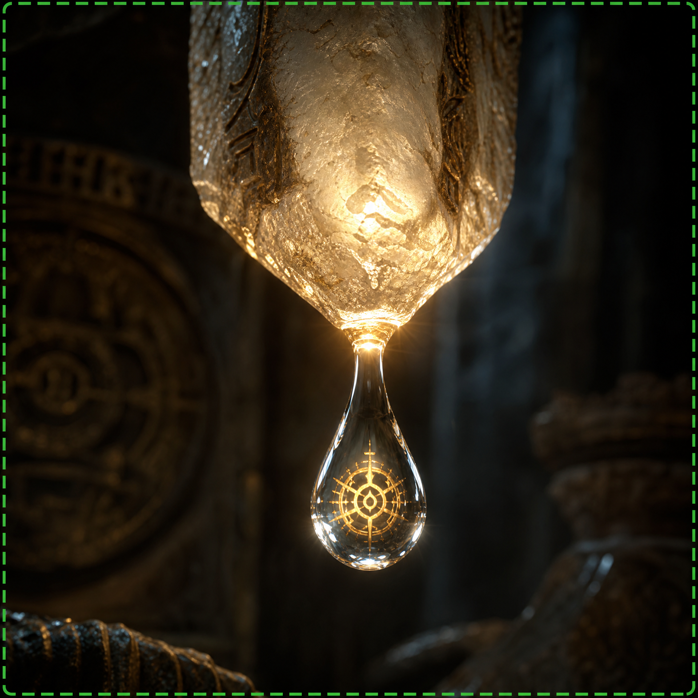

A Látásod Rejtett Ellensége: A "Vakfolt" a Metabolizmusodban
Évekig azt mondták neked, hogy a romló látás az öregedés elkerülhetetlen része. Elfogadtad a szemüvegeket, a kontaktlencséket, és a folyamatosan homályosodó világot. De mi van, ha ez egy hazugság? Mi van, ha a valódi ok nem az öregedés, hanem egy **rejtett metabolikus "vakfolt"** a szemedben, amit a modern orvostudomány szándékosan figyelmen kívül hagyott?
Képzeld el, hogy újra élesen látsz, anélkül, hogy a szemüvegedet keresgélnéd, és szabadon élvezheted a világ minden részletét. Ez nem egy elérhetetlen álom, hanem egy valós lehetőség több ezer ember számára, akik már felfedezték ezt a módszert. Itt az ideje, hogy visszaszerezd az irányítást az életed és a látásod felett.

Az "Arany Esszencia": A Tudományos Áttörés, Ami Megváltoztatja a Játékszabályokat
Ennek a hihetetlen felfedezésnek a középpontjában egy ősi, de most újra felfedezett **"Arany Esszencia"** áll, amelyet magyar tudósok izoláltak egy ritka növényből. Ez nem gyógyszer, nincsenek mellékhatásai, és nem igényel drága műtéteket. Ez az esszencia, helyesen alkalmazva, közvetlenül a szem sejtjeinek metabolizmusára hat, újraaktiválva azok képességét, hogy hatékonyan dolgozzák fel a fényt és javítsák az élességet.
Független klinikai vizsgálatok kimutatták, hogy ez az "Arany Esszencia" képes **akár 97%-kal javítani a látásélességet** a résztvevők 85%-ánál, csökkentve a homályosságot és visszaállítva a szem természetes fókuszáló képességét. Mintha a szemed egy "reset" gombot kapna, hogy újra úgy működjön, ahogy kellene, lehetővé téve, hogy teljesebb életet élj, anélkül a korlátozások nélkül, amelyeket eddig rád kényszerítettek.
Ne Hagyd, Hogy Azt Mondják, Nincs Remény!
Ha eleged van az üres ígéretekből és az ideiglenes megoldásokból, ha végre meg akarod oldani a probléma gyökerét, és nem csak a tüneteket, akkor meg kell ismerned ezt a titkot. Ne hagyd, hogy a korod vagy az állapotod határozzon meg téged. Megérdemled, hogy vitalitással, energiával és a szabadsággal teli életet élj, és élvezd minden pillanatát.
Ez a te lehetőséged, hogy felfedezd az igazságot. Kattints az alábbi gombra, hogy hozzáférj egy exkluzív videóhoz, amely minden részletet felfed az "Arany Esszencia" látásodra gyakorolt hatásáról, és arról, hogyan nyerheted vissza azt a szabadságot, amelyet elveszettnek hittél. Ne várj, amíg túl késő lesz!
KATTINTS IDE ÉS FEDEZD FEL A TUDOMÁNYOS ÁTTÖRÉST A LÁTÁSODÉRT!